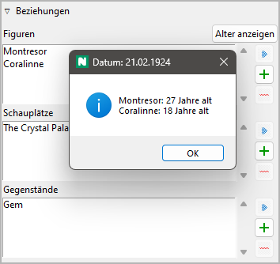

Abschnittseigenschaften
Die Ansicht der Abschnittseigenschaften öffnet sich im rechten Fenster, wenn Sie im Baum einen Abschnitt wählen.
Titel und Beschreibung
Titel und Beschreibung werden als beschreibbare „Karteikarte“ dargestellt.
Die Bearbeitung des Titels können Sie mit der Eingabetaste beenden. Änderungen an der Beschreibung werden übernommen, sobald mit der Maus irgendwo außerhalb des Texteingabefelds geklickt wird.
Schlagwörter
Schlagwörter sind ein frei benutzbares Werkzeug, um Abschnitte in der Baumansicht zu kennzeichnen. Schlagwörter müssen nicht anderswo definiert werden, sie werden einfach, durch Semikolons getrennt, ins Eingabefeld eingetragen. Die Bearbeitung können Sie mit der Eingabetaste beenden.
Vorsicht
Achten Sie auf eine einheitliche Schreibweise, falls Sie Schlagwörter mehrmals verwenden wollen.
Perspektive
Der Kurzname der Perspektivfigur wird in der Baumansicht angezeigt. Sie können ihn aus einer ausklappbaren Liste auswählen, die alle Figuren in der selben Reihenfolge wie in der Baumansicht enthält. Wenn Sie auf den obersten Eintrag der Liste klicken, löscht das die Perspektivzuordnung.
Unbenutzt
Mit dem Unbenutzt-Auswahlfeld können Sie den Abschnittstyp ändern.
An den vorherigen Abschnitt anhängen
Wenn dieses Feld angekreuzt ist, erhalten exportierte Dokumente keinen Abschnittstrenner vor dem ausgewählten Abschnitt. Der Abschnitt beginnt dann einfach mit einem neuen Absatz.
Plot
Dieses Fenster öffnen oder schließen Sie mit Klick auf den Titel.
Plotlinien
Hier können Sie den ausgewählten Absatz den Plotlinien zuweisen, zu denen er beiträgt. Die zugewiesenen Plotlinien werden in einer Liste dargestellt, in der Reihenfolge der Zuweisung zum Abschnitt.
Tipp
Einen bequemeren Weg, um Plotlinienzuweisungen zu verwalten und zu überblicken, bietet das nv_matrix-Plugin.
Sie können einen Abschnitt auch einer Plotlinie zuweisen, indem Sie im Handlungsraster Text ins entsprechende Plotliniennotizen-Feld eintragen.
- Eine Plotlinienzuweisung hinzufügen
Wenn Sie auf
 klicken, wird der „Auswahlmodus“
aktiviert, und der Cursor nimmt die Form eines „Plus“-Zeichens an.
Indem Sie auf eine Plotlinie klicken, verbinden Sie sie mit dem Abschnitt.
klicken, wird der „Auswahlmodus“
aktiviert, und der Cursor nimmt die Form eines „Plus“-Zeichens an.
Indem Sie auf eine Plotlinie klicken, verbinden Sie sie mit dem Abschnitt.Hinweis
Sie können den „Auswahlmodus“ auch ohne Auswahl beenden, indem Sie auf die eingefärbte Statusleiste klicken, oder die
Esc-Taste drücken.- Eine Plotlinienzuweisung entfernen
Wenn Sie auf
 klicken oder die
klicken oder die Entf-Taste drücken, wird die ausgewählte Plotlinie von der Liste entfernt.- Zur zugewiesenen Plotlinie springen
Wenn Sie auf eine zugewiesene Plotlinie doppelklicken, oder wenn Sie auf
 klicken, wird diese Plotlinie geöffnet,
und ihre Eingenschaften werden angezeigt.
klicken, wird diese Plotlinie geöffnet,
und ihre Eingenschaften werden angezeigt.Hinweis
Mit
 gelangen Sie zurück zum ursprünglich gewählten Abschnitt.
gelangen Sie zurück zum ursprünglich gewählten Abschnitt.- Plotliniennotizen
Sie können abschnittsbezogene Notizen für die Plotlinie eingeben, die in der Liste der zugewiesenen Plotlinien ausgewählt ist. Diese Notizen erscheinen im Handlungsraster, wo Sie sie ebenfalls bearbeiten können.
Plotpunkte
Die Plotpunkte, die dem ausgewälten Abwschnitt zugewiesen sind, werden zusammen mit ihren Plotlinien angezeigt.
Hinweis
Um die Zuweisung eines Plotpunkts zu ändern oder zu löschen, gehen Sie zu den Plotpunkt-Eigenschaften.
Szene
Dieses Fenster öffnen oder schließen Sie mit Klick auf den Titel.
Hier ein Beispiel für eine „Aktionsszene“:

Hier ein Beispiel für eine „Reaktionsszene“ oder „Folge“:
Es gibt eine verbreitete Theorie für „absatzstarke Autoren“, nach der Romane am besten in Szenen unterteilt werden, wobei sich „Aktionsszenen“ und „Reaktionsszenen“, oder „Szenen“ und „Folgen“ wechselseitig ablösen. Falls Sie so etwas umsetzen wollen, können Sie das hier tun.
Falls das nichts für Sie ist, Sie aber eine andere Methode anwenden wollen, um ihre Szenen dramaturgisch zu beschreiben, können Sie den Abschnitt als Andere einstellen, um frei benannte Textfelder zu erhalten.
Hier ein Beispiel für eine vom Standard abweichende Szenenkategorie:
Andererseits ist nicht jeder Abschnitt eine Szene, auf welche die oben erwähnten Kategorien zutreffen. Abschnitte können auch anderweitig charakterisiert werden, zum Beispiel als narrative Zusammenfassung, Dialog, Beschreibung oder Erklärung. Wenn also ein Abschnitt nicht szenisch ist, können Sie ihn als Keine Szene einstellen, um frei benannte Textfelder zu erhalten.
Hier ein Beispiel für eine nicht-szenische Abschnittskategorie
Beziehungen
Dieses Fenster öffnen oder schließen Sie mit Klick auf den Titel.
Wenn Sie Figuren, Schauplätze und Gegenstände mit dem Abschnitt verbinden wollen, können Sie das hier tun, indem Sie das jeweilige Element einer Liste von Beziehungen hinzufügen.
- Alter anzeigen
Wenn ein Abschnitt ein Datum hat, können Sie das Alter der verbundenen Figuren abrufen, die ein Geburtsdatum haben.
- Beziehung hinzufügen
Wenn Sie auf
klicken, wird der „Auswahlmodus“
aktiviert, und der Cursor nimmt die Form eines „Plus“-Zeichens an.
Indem Sie auf eine Figur, einen Schauplatz oder einen Gegenstand
klicken, verbinden Sie dieses Element mit dem Abschnitt.Hinweis
Sie können den „Auswahlmodus“ auch ohne Auswahl beenden, indem Sie auf die eingefärbte Statusleiste klicken, oder die
Esc-Taste drücken.- Beziehung entfernen
Wenn Sie auf
klicken oder die Entf-Taste drücken, wird die ausgewählte Beziehung von der Liste entfernt.- Zum verbundenen Element springen
Wenn Sie auf ein verbundenes Element doppelklicken, oder wenn Sie auf
klicken, wird das ausgewählte Element geöffnet,
und seine Eingenschaften werden angezeigt.Hinweis
Mit
gelangen Sie zurück zum ursprünglich gewählten Abschnitt.
Hinweis
Einen bequemeren Weg um Beziehungen zu verwalten und zu überblicken, bietet das nv_matrix-Plugin.
Datum/Zeit
Hier können Sie Informationen zur erzählten Zeit eingeben. Die Bearbeitung können Sie mit der Eingabetaste beenden.
Hinweis
Spezielle Zeitleistensoftware bietet Ihnen einen bequemeren Weg, Datum, Zeit und Dauer einzugeben. Falls Chronologie für Ihre Geschichte wichtig ist, sollten Sie sich das Timeline-Plugin oder das Aeon Timeline 2-Plugin ansehen.
Beginn
Die Handlung des ausgewählten Abschnitts beginnt hier:
- Datum
Format: JJJJ-MM-TT, entsprechend ISO 8601.
- Zeit
Format: hh:mm, entsprechend ISO 8601.
- Tag
Format: Jede Zahl. Tag „0“ ist das Bezugsdatum, falls angegeben.
Bemerkung
Alle Einträge sind optional. Sie können entweder ein Datum oder einen Tag angeben.
- Mondphase
Wenn die nötigen Datumsangaben vorliegen, können Sie die Mondphase dazu abrufen.

Die Mondphasenangabe setzt sich zusammen aus:
dem Phasentag (0 bis 29, wobei 0=Neumond, 15=voll etc.),
der sichtbaren Form,
dem beleuchteten Bruchteil.
Bemerkung
Die Berechnung der Mondphase beruht auf einem überschlägigen Verfahren von John Conway. In ihrer derzeitigen Ausführung ist sie nur für das 20. und 21. Jahrhundert gültig.
- Datum/Zeit löschen
Das setzt Datum, Zeit und Tag gleichzeitig zurück.
- Erzeugen
Das erzeugt Datum und Zeit aus Datum, Zeit und Dauer des vorhergehenden Abschnitts, so dass der ausgewählte Abschnitt unmittelbar auf den vorhergehenden folgt.
- Datum/Tag umwandeln
Falls ein Bezugsdatum angegeben ist, kann der unspezifische Tag in ein spezifisches Datum umgewandelt werden, und umgekehrt.
Hinweis
Falls nötig, können Sie die Datumsangaben in der Bucheigenschaften-Ansicht auch für alle Abschnitte auf einmal umwandeln.
Dauer
- Tage
Jede Zahl sollte akzeptiert weden.
- Stunden
Wenn Sie eine Zahl über 24 eingeben, wird die Anzahl der Tage automatisch erhöht.
- Minuten
Wenn Sie eine Zahl über 60 eingeben, wird die Anzahl der Stunden automatisch erhöht.
- Dauer löschen
Das setzt Tage, Stunden und Minuten gleichzeitig zurück.
- Erzeugen
Das erzeugt die Zeitdauer aus den Datum-Zeitangaben des folgenden Abschnitts, so dass dieser direkt auf den aktuell gewählten folgt.
Links
Dieses Fenster öffnen oder schließen Sie mit Klick auf den Titel.

Das ist eine Liste für Links zu Bildern und Recherche-Dokumenten.
Obwohl novelibre Daten zu Figuren, Schauplätzen und Gegenständen verwalten kann, ist es nicht die richtige Anwendung für umfangreichen Weltenbau. Dafür sollte man leistungsfähigere Softwareprogramme verwenden, zum Beispiel Zim Desktop Wiki. Dazu kann novelibre Hyperlinks zu den Textdateien erzeugen, welche Sie schnell zu den richtigen Stellen im Wiki führen.
Oder Sie haben einige Bilder gesammelt, die Sie beim Schreiben inspirieren. Dann erzeugen Sie einfach Links zu diesen Bildern und lassen Sie novelibre diese mit Ihrem System-Bildbetrachter öffnen.
Tipp
Wenn Sie mehrere Bilder z.B. zu einer Figur in einem Ordner gesammelt haben, den Ihr Standard-Bildbetrachter durchlaufen kann, ist ein einziger Link auf eines dieser Bilder ausreichend.
Die Links werden in einer Liste angezeigt, und zwar in der Reihenfolge der Eingabe.
- Link hinzufügen
Wenn Sie auf
klicken, öffnet sich ein Dateiauswahldialog.
Die ausgewählte Datei wird der Linkliste hinzugefügt.Hinweis
Der Dialog zeigt zunächst nur Bilddateien. Für andere Dateitypen ändern Sie die Auswahl in der unteren rechten Ecke.

- Link entfernen
Wenn Sie auf
klicken oder die Entf-Taste drücken, wird der ausgewählte Link von der Liste entfernt.- Link öffnen
Wenn Sie auf einen Link doppelklicken, oder auf
klicken,
wird die Datei, auf die der Link verweist, mit der Standardanwendung
für ihren Typ geöffnet.Hinweis
Falls Sie bestimmte verlinkte Dateien mit einer anderen Anwendung als der System-Standardanwendung öffnen wollen, können Sie eine „Programmstarter“-Einstellung vornehmen. Dafür erzeugen Sie einfach eine Textdatei namens launchers.ini im Verzeichnis
.novx/config(wo alle Konfigurationsdateien liegen). Hier in können Sie Erweiterungen Anwendungsprogramme zuordnen.Zim Desktop-Wiki-Seiten sind ein Sonderfall. Dafür ordnen Sie die .zim-Erweiterung dem Zim-Programm zu.
Dieses Beispiel zeigt eine Einstellung, die novelibre Textdateien mit der Zim Desktop Wiki-anwendung öffnen lässt, statt mit dem Standard-Texteditor:
[SETTINGS] .zim = C:/Program Dateis (x86)/Zim Desktop Wiki/zim.exe

„Haftmerker“
Der gelbe Texteingabebereich ist für Notizen. Änderungen werden übernommen, wenn mit der Maus irgendwo außerhalb des Texteingabefelds geklickt wird.
Wenn der „Haftmerker“ eines Abschnitts Text enthält, erscheint in the Baumansicht ein „N“ als Hinweis.
Wenn ein Kapitelzweig mit Abschnitten, die Notizen enthalten, eingeklappt wird, erscheint das „N“ in der Kapitelzeile.